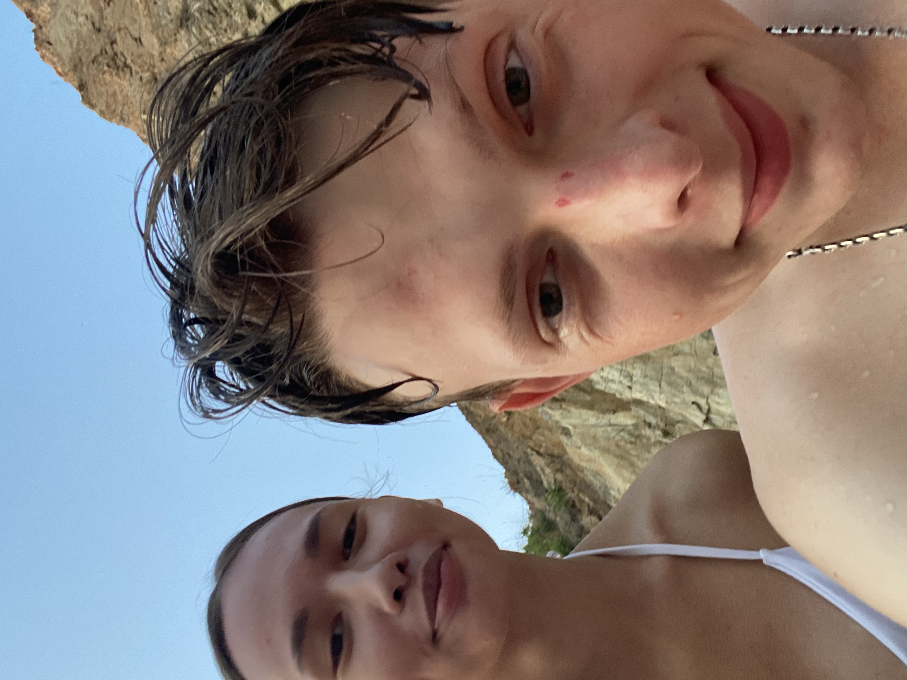
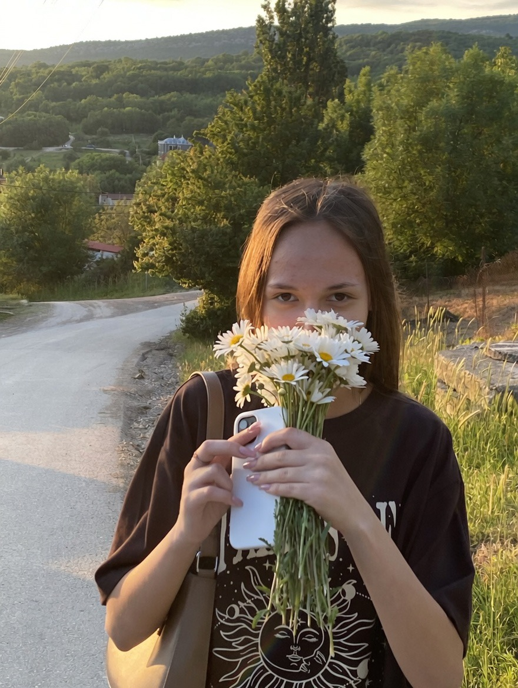

Летние закаты
Я всегда буду помнить наши летние вечера у моря. Как мы лежали рядом, смотрели на закат и будто забывали обо всём вокруг.
Каток 😅
Полина очень уговаривала меня сходить на каток и говорила, что отлично катается.
А я честно сказал, что стоял на коньках всего раз 5 в жизни.
Но именно такие моменты почему-то становятся самыми тёплыми воспоминаниями.

Камень у моря
Как-то раз мы были на море, и я вместо того, чтобы красиво вынырнуть возле Поли — ударился головой об камень 😭
Потом ходил с шишкой ещё недели три. Но сейчас это один из самых любимых и смешных моментов.

Ромашки
1 июня 2025 мы поехали к водопаду Козырёк.
А под конец прогулки я нарвал тебе букет полевых ромашек.
Иногда самые простые моменты становятся самыми важными.
